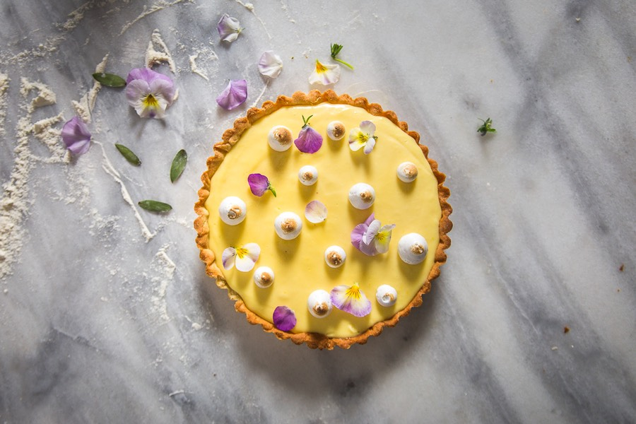

Tarte au citron meringuée

Aujourd’hui je vous retrouve avec une recette de tarte au citron meringuée et pas n’importe laquelle car j’ai choisi de suivre une nouvelle fois une recette de Pierre Hermé et aujourd’hui encore je ne suis vraiment pas déçue!
La dernière fois que j’ai testé une recette de Pierre Hermé c’était la fameuse recette de la pâte à crêpes (qui vous avez bien plu d’ailleurs et je comprends pourquoi!). J’avais tellement adoré ces crêpes qu’en suivant je voulais à tout prix tester sa tarte au citron meringuée (car oui j’adore les tartes au citron) et là encore le résultat est juste WAOUH! Pas trop gras, pas trop sucré, pas trop citronné, bref un régal (et on pourrait même croire que c’est léger). A l’origine, sa recette est prévue pour une grande tarte de 28-30 cm. De mon côté, j’ai choisi d’en faire deux petites de 18 cm ce qui m’a permis d’en faire profiter plus de monde et c’était vraiment parfait! La recette paraît longue à la lecture mais rassurez-vous, elle est vraiment très simple à réaliser, elle est rapide et elle mettra tout le monde d’accord croyez moi! La recette initiale prévoit de garnir toute la tarte de meringue mais je trouve ça souvent TROP! Trop sucré, trop présent par rapport au citron et c’est pourquoi j’ai choisi de n’en mettre que des petites touches par-ci par-là. Si vous voulez recouvrir entièrement votre tarte (ou vos tartes si vous en faites deux comme moi), pensez donc à doubler les quantités de la liste d’ingrédients pour la préparation de la meringue. Je vous laisse découvrir tout ça plus bas et si jamais vous tentez cette recette essayez de faire la pâte vous-même vous verrez elle est vraiment délicieuse et ça ne prend que 5 minutes! N’hésitez pas à me dire ce que vous pensez de cette recette de tarte au citron meringuée, je vous souhaite de passer bonne journée et je vous dis à très vite ♥
Ingrédients
- Farine - 170g
- Beurre - 100g
- Sucre glace - 60g
- Poudre d'amande - 20g
- Oeuf - 1
- Fleur de sel - 1 pincée
- Vanille - 1 gousse (ou vanille en poudre-1càc)
- Sucre - 220g
- Beurre - 300g
- Citrons non traités - 3
- Oeufs - 4
- Sucre - 60g
- Eau - 20g
- Blanc d'oeuf - 1
Instructions
- Dans le bol de votre robot, mixez le beurre jusqu'à ce qu'il devienne crémeux
- Sans arrêtez votre robot, ajoutez progressivement le sucre glace, la poudre d’amande, la farine, les graine de la gousse de vanille (ou 1càc de vanille en poudre), la fleur de sel et l’œuf
- Mélangez jusqu'à obtenir une boule de pâte homogène (si elle est vraiment trop collante ajoutez un peu de farine)
- Enveloppez-la dans du film alimentaire et mettez-la au frais pendant 3-4 heures (d'où l’intérêt de la faire la veille pour le lendemain)
- A la sortie du frais, beurrez et farinez votre moule à tarte ou cercle à pâtisserie (moi j'utilise une bombe graissante)
- Étalez la pâte entre deux feuilles de papier sulfurisé sur 2mm d'épaisseur environ
- Déposez votre pâte à tarte dans votre cercle à pâtisserie ou moule à tarte (si vous utilisez un cercle à pâtisserie pensez à mettre une feuille de papier sulfurisé dessous)
- Remettez au frais une bonne demi-heure pour que la pâte redurcisse (cela lui permettra de garder une belle forme pendant la cuisson)
- Préchauffez votre four (chaleur tournante) à 180°
- Recouvrir votre fond de tarte de papier sulfurisé
- Déposez des billes de cuisson (ou haricots secs) sur l'ensemble du fond de tarte
- Enfournez pendant 15 minutes environ
- Surveillez régulièrement la cuisson, la pâte doit être dorée
- Au bout des 15 minutes, sortez la pâte du four, retirez les billes de cuisson et le papier sulfurisé puis remettre au four pour 5-10 minutes afin de dorer parfaitement le fond de tarte
- Sortir le fond de tarte du four et laissez-le entièrement refroidir hors de son moule (attention à sortir le fond de tarte de son moule très délicatement pour éviter de le casser)
- Dans un saladier, versez le sucre
- Zestez les citrons au dessus du saladier
- Mélangez très délicatement le sucre et les zestes de façon à obtenir un mélange humide et granuleux (similaire à du sable)
- Pressez les citrons et garder leur jus de côté
- Ajoutez les œufs un à un en battant le mélange à chaque ajout
- Ajoutez le jus des trois citrons et mélangez à nouveau pour obtenir un mélange homogène
- Déposez ce mélange au dessus d'un faitout contenant un fond d'eau
- Le saladier ne doit pas toucher l'eau contenu dans le faitout
- Faites chauffer l'eau (même principe que le bain marie) et mélangez la crème au citron régulièrement au fouet (cette étape prend 15 bonnes minutes. Vous devez obtenir une crème plus épaisse)
- Quand le mélange au citron atteint les 83°, retirez le saladier et mettez-le dans de l'eau froide (moi je remplis une poêle d'eau très froide et je pose le saladier dessus)
- Continuez de mélanger
- Quand la température redescend à 60° ajoutez le beurre (coupé en morceaux) petit à petit en mélangeant à chaque ajout
- Quand le beurre a parfaitement fondu passez le mélange au blender (ou mixez à l'aide d'un mixeur plongeant) pour éclater les molécules de matières grasses et obtenir ainsi une belle crème
- Versez la crème au citron sur votre fond de tarte
- Réservez au frais pendant la préparation de la meringue
- Dans le bol de votre robot, verser le blanc d’œuf
- Dans une petite casserole, versez l'eau et le sucre
- Portez le mélange à ébullition
- Dès que le sirop atteint 115°C, commencez à montez le blanc en neige à l'aide du fouet
- Dès que le sirop atteint 118°C, faites couler le sirop le long de la paroi de votre robot tout en continuant de fouetter
- Augmentez la vitesse de votre robot et continuer de fouetter jusqu'à ce que la meringue ait refroidie
- Versez la meringue dans une poche à douille et décorer votre tarte
- Dorez la meringue à l'aide d'un chalumeau
- Conservez au frais jusqu'au moment de la dégustation
Les tips de la communauté
Tarte sublime et très populaire. Recette parfaite selon l'auteure, crème légère et onctueuse. Reprendre la recette de Pierre Hermé avec confiance.
Astuces
- Recette de Pierre Hermé garantissant l'excellence du résultat
- Crème légère et onctueuse si bien dosée
- Ajout de copeaux de chocolat noir complète merveilleusement le résultat
- Accessible à tout niveau même sans grande expérience de pâtisserie